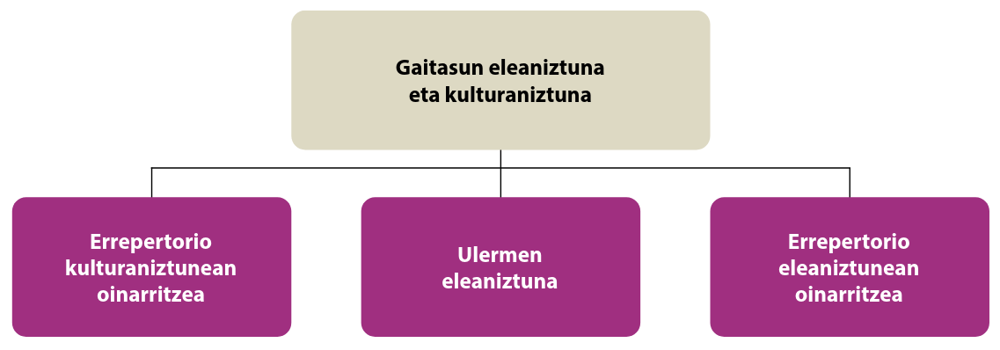

3 Hurbilpen bat hizkuntza ez‐curricularren trataerara HH eta LH etapetan
📹 *
Haur Hezkuntzan (HH) eta Lehen Hezkuntzan (LH) hizkuntza ez-curricularren trataera eza eta eklektikoa azken urteotan gero eta gehiago igartzen da, ikasleen jatorri linguistiko eta kulturalaren ugaritasun prozesua eta horri aurre egiteko eredu argi falta direla eta. Eskolak, tradizionalki, curriculum dekretu eta garapen ofizialetan jasotako hizkuntzen irakaskuntzan zentratu dira; hala ere, ikasleen etxeko hizkuntzak edo jatorrizko hizkuntzak gero eta gehiago ari dira agertzen hezkuntza-politiken eta ikerketa pedagogikoen eztabaidan. Testuinguru honetan, oinarrizkoa da ulertzea zer rol izan dezaketen hizkuntza horiek hezkuntzan, nola jasotzen diren araudietan eta politiketan, eta zein praktika garatzen ari diren eskoletan. Kapitulu honek, hain zuzen ere, ikuspegi teoriko eta normatibo desberdinen azterketatxu bat egiten du, eta aldi berean ikasgelako benetako praktikekin alderatzen du, hizkuntza ez-curricularrek hezkuntza inklusiboan eta gizarte-kohesioan duten zereginaz hausnartzeko.
Hizkuntzen Europako Erreferentzi Marko Bateratuaren liburu osagarria 2020aan argitaratu zen eta 2022an euskarazko bertsioa zabaldu zen (Europako Kontseilua, 2022). Horretan Gaitasun Eleaniztuna eta Kulturaniztuna zehaztu ziren norbanakoaren aniztasun kultural eta linguistikoaren aberasgarri.
Ikuspegi eleaniztunak…
…gizabanakoak hizkuntza baten kultur ingurunean duen hizkuntz esperientzia zabaldu ahala, hasi familia-hizkuntzatik eta gizarte-hizkuntzaraino, oro har, eta beste herri batzuetako hizkuntzetaraino gero (izan eskolan edo unibertsitatean ikasiak, edo zuzeneko esperientziaren bidez ikasiak), hizkuntza horiek eta kultura horiek ez ditu adimeneko gune berezietan gordetzen; aldiz, komunikazio-gaitasun bat garatzen du, hizkuntz arloko ezagutza eta esperientzia guztien bidez eta hizkuntzen arteko harremanaren eta elkarreraginaren bidez. (EEMB, 2001, 1.3 atala)
– Europako Kontseilua (2005)

- EAEko hezkuntza sistema. Familientzako informazioa
3.1 Araudiak eta europar gomendioak
Euskal Herritik hasi eta Europako zenbait eskualdetan hizkuntza ez-curricularren –curriculumean ikasgai modura jasota ez dauden ikasleen etxeko edo jatorrizko hizkuntzen– trataera aztertzen du, haur hezkuntzan zein lehen hezkuntzan. Aurreikusitako marko normatibo eta teorikoak alderatu dira benetako eskola-praktikekin, eta ikuspegi inklusiboen zein baztertzaileen argudio nagusi batzuk identifikatu dira; ahaleginez erreferentziak eta adibideak gehituta.
Araudia: Nazioarteko erakundeek hizkuntza-aniztasunaren trataera positiboa sustatzen dute. Europako Kontseiluaren gomendioek estatuak animatzen dituzte curriculumekoak ez diren etxeko hizkuntzak hezkuntza-prozesuan txertatzera eta, posible denean, formalki aitortzera (Europarat, 2022). Halaber, Europako Batasunaren 2019ko Gomendioak eskoletan “hizkuntzen kontzientziazioa” garatu beharra aldarrikatzen du, ikasleek dakizkiten baina ikastetxean erakusten ez diren hizkuntzak ere kontuan hartuta(Europako Kontseilua, 2019). Estatu mailan, legeek heterogeneoki jorratzen dute gaia: Espainiako markoan hezkuntza-lege berriak (Estatuko Buruzagitza [Jefatura del Estado], 2020) “konpetentzia eleaniztuna” txertatu du oinarrizko gaitasun bezala, hau da, ikasleak hizkuntza desberdinak erabiltzera eta hizkuntzen arteko transferentziak egitera bultzatzen ditu.
Frantziako araudipean, aldiz, frantsesa da ikas-hizkuntza nagusia, nahiz eta urte luzez ELCO1 programen bidez jatorrizko hizkuntzetako klase hautazkoak eskaini izan diren (italiera, gaztelania, arabiera, portugesa, turkiera eta serbiera); 2020tik aurrera, Frantziak programa horiek bertan behera utzi eta hizkuntza horiek atzerriko hizkuntza moduan integratzen saiatu da; utzi zirenean LHko 80.000 bat ikasle ari zen horretan. Egungo EILE (Enseignements internationaux de langues étrangères) proiektuan lau hizkuntzak hartzen dute parte: arabiera, italiera, portugesa eta turkiera2.
Hegoaldeko autonomia elkarteetan, EAEko eta Nafarroako curriculumen markoek printzipioz hizkuntza-aniztasunari buruzko jarrera irekiak jasotzen dituzte, baina ez dute espresuki hizkuntza ez-curricularren irakaskuntzaz edo ikaskuntzaz jarduten. EAEko Heziberri 2020 planak eleaniztasun integratua aipatzen du, baina praktikara begira curriculumaren garapen publikoan, arreta jarri da bi hizkuntza ofizialetan. Bestalde, Ipar Euskal Herrian Frantziako legedia aplikatzen denez, tokian tokiko salbuespen bakanekin (adibidez, ikasleen jatorrizko hizkuntzetako eskolaz kanpoko talde batzuk). Ikastetxe barruan EILE proiekturako departamentuko ordezkaririk ez dago; nekez eta ozta-ozta euskararen beraren irakaskuntza aurki daiteke berezko euskararen lurraldean ikastetxe publikoetan.
3.2 Ikuskera teoriko eta pedagogikoak
Ikuspegi inklusiboek diote ikasleen hizkuntza guztiak direla haien identitate eta ikaskuntzaren oinarri, eta eskolak baliabide bezala erabili behar dituela. Translanguaging (Williams, 1994) edo hizkuntzen arteko uztartzea bezalako heziketa-ikuspegiak proposatzen dira: ikasleari bere ama-hizkuntzan pentsatzen eta adierazten uztea, helburu akademikoak lortzeko bidea errazteko.
Europar Komunitate zientifikoak ere hizkuntzen trataera integratua eta eleaniztasunaren aldeko pedagogiak babestu ditu; esaterako, Hezkuntza inklusiboaren diseinu unibertsala (IDU) eta HEBI/CLIL edota hizkuntza-paisaia hezitzailea aipatzen dira praktika egokien artean. Horien arabera, ikasleek ez lukete euren etxeko hizkuntza “eskola-atarian utzi behar, baizik eta harekin ikaskuntza bultzatu”4 (Europarat, 2022); hain zuzen, ikasleen hizkuntza propioak aitortzea eta erabil daitezkeen egoeretan txertatzea funtsezkoa litzateke ikasteko motibazioa, konfiantza eta partaidetza areagotzeko. Kontrako ikuspegiek, ordea, hainbat kezka azaleratzen dituzte: batetik, curriculumaren zama handitzea eragingo omen litzateke (hizkuntza gehiago sartzeak denbora kentzen diola hizkuntza ofiziala sakon ikasteari) eta, bestetik, ziurtasun faltako argudioak erabiltzen direla salatzen dute (ebidentzia nahikorik ez dagoela esateko ama-hizkuntzan trebatzeak derrigorrez hobekuntza nabarmenak dakartzanik). Elebakartasun akademikoaren aldeko jarrerek diote eskolak hizkuntza komun baten bitartez berdintasuna eta kohesioa ziurtatu behar dituela, eta ikasle etorkinek lehenbailehen murgildu behar dutela eskolako hizkuntza nagusian. Kritiko horien ustez, “jatorrizko hizkuntza ikasteko denbora ikaskuntza ofizialerako erabili beharko litzateke” eta interdependentziaren hipotesiaren (L1ak L2a indartzen duela dioenaren) aldeko froga gutxi dagoela azpimarratu dute (Can-Nizamoğlu, 2019).
Dena den, aditu askoren esanetan, ikuspegi baztertzaileok ez dira datuetan oinarritzen, sentipen edo ideologia jakin batzuetan baizik, eta gaur egun ikasleen ama-hizkuntzen aldeko ikuspegia nagusitzen ari da hezkuntza inklusiboaren diskurtsoan. Erabiltzen diren ikerketa eta kasuen azterketak datuen argitara aztertu beharra dago, zer den lastoa eta zer garaua jakin nahi badugu.
3.2.1 Praktikak eta programak
Gure ingurutik hasi eta Europako arau eta praktika batzuei begiratuko diegu, arau ikuskera galdu barik.
3.2.1.1 Hego Euskal Herrian
Teorian, hezkuntza-erakundeek hizkuntza-aniztasuna positiboki baloratzen dute. Adibidez, EAEko Inklusio Planak (2019–2022) dio ikasle etorkinen integrazioa bermatzeko beharrezkoa dela harrera linguistikoa eta kulturartekotasuna lantzea. Praktikan, ordea, eskoletan lehentasunezkoa da ikasle berriei euskararen (eta/edo gaztelaniaren) gaitasunak ahalik eta azkarren irakastea. Harrera-gelak eta hizkuntza-laguntzako programak antolatu dira ikasle etorri berrientzat, baina normalean helburu nagusia ikas-hizkuntza ofizialetan murgiltzea izan ohi da, ez hainbeste haien jatorrizko hizkuntzetan trebatzea. Hala ere, badira zenbait ekimen interesgarri: esate baterako, familien parte-hartzea sustatzeko jarduerak (kultura eta hizkuntza desberdinen asteak antolatzea, gurasoek euren hizkuntzan ipuinak kontatzea gelan, etab.), edo ikastetxeko hizkuntza-paisaia aberastea (ikasgelako agurrak, zenbakiak edo oinarrizko hitzak ikasle guztien hizkuntzetan jartzea). Zenbait eskola-sareetan protokoloak garatu dira ikasle etorkinen harrera eleaniztuneko planak egiteko, non tutoreek familia berriaren hizkuntza errealitatea kontuan hartu behar duten. Edonola ere, ez dago euskal hezkuntzan derrigorrezko politika edo programa formalik ikasleen ama-hizkuntzak irakasteko, salbu eta komunitate jakin batek bere kabuz (edo enbaxada bidez) antolatzen dituen eskolaz kanpoko klaseak.
Esanguratsua da datu hau: EAEko ikasle etorkin berrien %63ren etxeko hizkuntza gaztelania da, eta gainerako gehiengoak portugesa (%10 inguru) eta arabiera/tamazigh dira; txinera eta errumaniera ere badaude ehuneko txikiagoetan (Berasategi, 2015). Horrek esan nahi du etorkin askok gaztelaniarekin komunikatzeko gaitasun nahikoa dutela hasieratik, baina euskararekin ez, eta ondorioz, kasu askotan gurasoek D ereduko murgiltze eredu oso euskaldunera baino erdarazko ereduetara (A/B) bideratzen dituzte seme-alabak.
Horrek muga bat sortzen du: ikasle horiek aukera gutxiago izango dute euskaraz trebatzeko, eta aldi berean eskolak ez du baliabide berezirik eskaintzen haien beste ama-hizkuntzak mantentzeko.
3.2.1.2 Ipar Euskal Herria
Frantziako estatuko eskoletan hizkuntza bakarreko immersio eredua nagusi da (frantsesean), salbu eta Seaskako ikastolak eta neurri baxuagoan Ikas BI proiektuko eta giristino eskoletako proiektu elebidun gutxi batzuk (baina horiek ere curriculumeko hizkuntza ofizialei dagozkie, ez etorkinen hizkuntzei). ELCO programen ondorengo EILEren inplimentaziorik ez dago ez Ipar Euskal Herrian ez Departamentuko beste inon ere. Hortaz, Ipar EHko errealitatea da ikasle etorkinen ama-hizkuntzak eskolatik kanpo geratzen direla gehienean; hala ere, komunitate batzuek (Magrebekoak, portugaldarrak, etab.) asteburuko edo arratsaldeko ikas komunitarioak antolatzen dituzte, elkarteen bitartez, umeek beren hizkuntza gal ez dezaten.
3.2.1.3 Europan zehar
Europar panorama oso anitza da hizkuntza ez-curricularren trataerari dagokionez. Iparraldeko herrialdeak (Suedia, Norvegia, Finlandia…) aitzindari dira ama-hizkuntzen irakaskuntza instituzionalizatzen. Suedia da eredurik garbiena: 1977ko Home Language Reform-az geroztik, ikasle orok eskubidea du bere etxeko hizkuntza irakasgai modura ikasteko, haur hezkuntzatik bigarren hezkuntzara bitarte. Udalerriak behartuta daude Mother Tongue Instruction (MTI) eskolak antolatzera, gutxienez, 5 ikasleko hizkuntza-taldeak badaude eta irakasle kualifikatua eskuragarri3.
Ondorioz, Suediako hezkuntza-sisteman 150 hizkuntza baino gehiago eskaintzen dira MTI ikasgai moduan urtero. Suediako lege babesa oso sendoa da arlo honetan: Hizkuntza Legeak eta Hezkuntza Legeak bermatzen dute eskubide hori, nahiz eta praktikan zenbait muga egon (irakasle eskasia zenbait hizkuntzatan, edo klase horiek eskola-orduetatik kanpo antolatzen direlako).
Norvegian antzeko eskubidea dago Hezkuntza Legearen 2-8 atalean: ikasle etorkinek “bere ama-hizkuntzan irakaskuntza eta norvegierazko bigarren hizkuntza laguntza jasotzeko eskubidea” dute denbora batez. Norvegiako udalerri askok bi sistema uztartzen dituzte: hastapenean, irakasle elebidunek ikasgai batzuk bi hizkuntzatan ematen dizkiete ikasle berriei (irakaskuntza elebiduna), aldi berean norvegiera indartzen dieten bitartean. Hala ere, praktika horiek iragankortzat hartzen dira normalean: helburua da ahalik eta azkarren ikasleak norvegierazko klase arruntetara eraman ahal izatea. Finlandian, hizkuntza gutxiengoen eskubideak oso errotuta daude (adibidez, suomierazko eskoletan suediar hiztun gutxiengoarentzat eta alderantziz), eta horrez gain, etorkin hizkuntza askotan udalerriak klase osagarriak eskaintzen ditu (2010eko hamarkadan 50etik gora hizkuntza irakasten ziren Finlandiako udal eskola batzuetan).
Mendebaldeko Europan, Alemaniak eta Suitzak neurri baldintzatuak dituzte: lurralde edo kantoi batzuetan administrazioak Herkunftssprachlicher Unterricht (HSU) deituriko klaseak antolatzen ditu hizkuntza “handietan” (esaterako, turkiera, italiera, poloniera, errusiera…), baina beste kasu askotan, klase horiek etorkinen jatorrizko herrialdeen kontsulatu edo enbaxaden esku daude (adibidez, Turkia edo Italiako gobernuek bidalitako irakasleekin). Bi herrialde hauetan, beraz, eskaintza ez da nazio mailan homogeneoa: badira estatu-federatuan programa sendoak dituzten länder edo kantoiak, eta beste toki batzuetan ia ez dago aukerarik. Oro har, Alemanian eta Suitzan klase horiek aukerakoak eta eskolaz kanpokoak izaten dira, eta askotan parte-hartze apalarekin (Can-Nizamoğlu, 2019) . Hala eta guztiz ere, zenbait eskualdetan aurrerapenak ikusi dira: adibidez, Ipar Renania-Westfalian jatorrizko hizkuntzak hautazko ikasgai ofizial moduan baloratzen dira (nota eta guzti).
Hego Europan, joera orokorra hizkuntza ez-curricularren trataera murriztailetzat hartu ahal da. Espainian, ez dago estatu mailako lege edo programarik etorkinen ama-hizkuntzei heltzeko; ordea, indarrak bideratzen dira ikasle etorri berriei gaztelania (edo autonomia erkidegoari dagokion hizkuntza koofiziala batzuetan) irakasteko atal berezien bidez (ikasgela erregularetik kanpo ordu batzuk). Kulturartekotasuna aipatzen da hezkuntza printzipio bezala, eta zenbait ikastetxetan “hizkuntzen atalak” edo kultura arteko tailerrak egiten dira (esate baterako, marokoar jatorriko ikasleen familiek haien kulturako errezetak edo istorioak aurkezten dituzte, etab.), baina horiek ez daude sistematikoki antolatuta. Italian, 1990eko hamarkadan neurri batzuk hartu ziren (1998ko Testo Unico sull’Immigrazione legea) etorkinen kultur eta hizkuntzak eskolan aintzat hartzeko; hala ere, praktikan, Italiako eskolak ere italieraren immertsioan oinarritzen dira. Badira toki batzuetan udal edo probintziek laguntzen dituztela Corsi di lingua e cultura d’origine direlakoak (batez ere hirietan, arratsaldetan komunitate handien hizkuntzetarako klaseak – adibidez, Erroman edo Milanen badaude txinerazko eta arabierazko klaseak antolatuta –), baina estatu-mailan ez da betebeharrik. Portugalek ere antzeko politika izan du: immigranteen seme-alaben integrazio linguistikoa portugesaren bidez bideratu du.
Erresuma Batua eta Irlanda kasu bereziak dira, euren hezkuntza-sistemek EAL (English as an Additional Language) delakoari garrantzia ematen diotelako. Erresuma Batuan, legeak ez du aurreikusten etxeko hizkuntzen irakaskuntza, baina eskoletan badago nolabaiteko malgutasuna: komunitate handiak dauden tokietan, batzuetan udalek edo eskola batzuek borondatez antolatzen dituzte klase edo baliabide gehigarriak (adibidez, Birmingham-en urduerazko literatur tailerrak eskaini izan dira eskola jakin batzuetan). Oro har, Ingalaterran eta etorkin ugari dituzten beste lurralde batzuetan (Londres, etab.), oso ohikoa da eskola bakoitzean 30-40 hizkuntza desberdin hitz egiten duten ikasleak egotea; eskolek euskarri eleaniztun informala garatu dute kasu askotan: ikasle ohien edo komunitateko laguntzaileen sare bat, beharren arabera itzulpenak egiteko edo zailtasunak dituzten haurrekin lanean aritzeko. Hala ere, ez dago irakasgai zehatzik: ingelesa da ikas-hizkuntza, eta komunitate-etapak edo kanpo eskola komunitarioak dira haurrek beren etxeko hizkuntzetan trebatzen jarrai dezaten bide bakarra. Irlandan antzera, azken urteotan immigrazioa hazi den arren, hezkuntza-sistemak ingelesa du ardatz (eta gaelikoa, kasu batzuetan); eskoletan animatzen da ikasleen familien hizkuntzak errespetatzera, baina eduki formalik gabe.
Guztira, hiru kategoria bereiz daitezke Europan:
- herrialde babesleak: Hizkuntza ez-curricularrak eskola-politiketan txertatu eta sustatzen dituztenak, adib. Suedia, Finlandia, Luxenburgo,
- baldintzapeko babesleak neurri partzialak edo aukerakoak dituztenak adib. Alemania, Suitza, Italia, Herbehereak
- eta murriztaileak hizkuntza bakarreko-edo ikuspegi zorrotza dutenak, laguntza gehigarririk gabe, adib. Frantzia, Erresuma Batua, Espainia.
Oharrak: Luxenburgok eta Herbehereek ez dute lege-eskakizunik ama-hizkuntzen irakaskuntzarako, baina ekimen interesgarriak dituzte. Luxenburgok, biztanleriaren %20 portugaldarra izanik, portugeseko klase osagarriak integratu ditu zenbait eskolatan; Herbehereetan, 2019tik Language Friendly School sareak zabaltzen ari dira4, eskola eleaniztunagoak sustatuta.
3.3 Desadostasun nagusiak: inklusioa vs bazterketa
Hizkuntza ez-curricularren gaian, bi ikuspegi nagusik talka egiten dute maiz:
3.3.1 Inklusioaren aldeko ikuspegia:
Ikuspegi honek dio ikasleen hizkuntza guztiak altxor bat direla bai haientzat bai komunitate osoarentzat, eta eskolak altxor hori errekonozitu eta baliatu behar duela. Argudio nagusiak honakoak dira:
Hezkuntza eskubidea eta berdintasuna: ikasleak ezin dira behartu bere identitatearen zati bat, hizkuntza, eskolatik kanpo uztera; haurraren garapen osoa sustatzeko, bere ama-hizkuntza onartu eta integratu behar da.
Ikaskuntza eta garapen kognitiboa: hizkuntza batean lortutako gaitasunak beste hizkuntzetara transferi daitezke; Jim Cummins-en interdependentzia hipotesiaren arabera, H1aren garapenak H2aren ikaskuntza erraz dezakeela suposatzen da. Ondorioz, ikaslearen oinarrizko hizkuntza ondo eraikita badago, hizkuntza berriak ikastea azkarragoa eta sakonagoa izango da.
Motibazioa eta autoestimua: Eskolak bere jatorrizko hizkuntza eta kultura aitortzen badizkio ikasleari, ikasle hori onartua eta baloratua sentitzen da, eta horrek bere motibazio akademikoa hobetzen du. Alderantziz, bere hizkuntza “ezkutatu” beharra baldin badu, autoestimu galtzea eta atxikimendu eskasa eragin dezake.
Familia-inplikazioa: Gurasoek normalean ez dute eskolako hizkuntzan maila alturik izaten etorkin berrien kasuan; beraz, haien hizkuntza sartuz gero eskola-dinamikan, gurasoek errazago parte har dezakete (adierazpenak ulertuz, esaterako bileretan itzultzaileak edo baliabide eleanitzak eskainiz, etab.). Horrek zubiak eraikitzen ditu eskola eta komunitatearen artean.
Ondare kulturala eta gizarte-kohesioa: herrialde bateko eskolak bertako kultura transmititzeaz gain, aniztasuna eta tolerantzian hezteko tokiak ere badira; ikasle guztiek besteen hizkuntzak ezagutzea (gutxienez izenez edo zenbait hitz) lagungarria da elkarren arteko errespetua eta jakin-mina sustatzeko. Horrek, etorkizunean, gizarte-kohesio handiagoa ekar lezake, immigrazioari lotutako aurreiritziak murriztuz.
Ikuspegi inklusibo honen alde ebidentzia ugari pilatu da azken urteotan: adibidez, UNESCOk etengabe azpimarratu du ama-hizkuntzan oinarritutako hezkuntza funtsezkoa dela ikaskuntza esanguratsurako, bereziki lehen urteetan.
Language Friendly School ekimenak zerrenda bat eskaini du5 etxeko hizkuntzak integratzearen onurekin:
- haurrak hobeto eta bizkorrago ikasten dute ulertzen duten hizkuntza batean;
- eskolan gusturago daude eta etxean bezala senti daitezke;
- autoestimua handitzen da;
- gurasoen parte-hartzea areagotzen da;
- eta, epe luzera, ikasle eleaniztunek arrakasta akademiko eta sozioekonomiko handiagoak lortzen dituzte, ikasketak gehiagotan bukatuz
Bestalde, apunteok idazteko orduan ez da aurkitu ikerketarik ama-hizkuntzaren erabilerakhizkuntza nagusiaren ikasketan kaltea eragiten duela dioenik, eta bai ugari egoera batzuetan mesedegarria ere badela diotenak; Alemaniako zenbait azterlanen arabera, jatorrizko hizkuntzetako klaseetara joateak ez du eragin negatiborik alemanezko emaitzetan, eta “ziurtasunez ekartzen du familiaren hizkuntzaren garapen osagarri bat, hots, hizkuntza-gaitasun gehigarria”, Duisburg-Essen-eko Unibertsitatean, Ipar Renania-Westfalian, Alemaniako jardunen inguruko ikerketa taldea dago6 .
Inklusioaren aldekoek nabarmentzen dute, halaber, ikasleen etxeko hizkuntzak ikasgelan erabiltzeak ez duela urratzen derrigorrezko hizkuntza ofizialaren erabilera: irakasleak, hala ere, hizkuntza ofizialean jarraituko du irakasten, baina aldi berean ikasleek beste hizkuntzak erabil ditzakete ikasteko lagungarri bazaie (Europako Kontseilua, 2019). Azken finean, ezagutzak erakusten digu hizkuntza askoren erabilerak ez duela kaltetzen, aberasten baizik.
3.3.2 Baztertzearen aldeko ikuspegia, etorkinen hizkuntzak baztertzearen aldekoa.
Ikuspegi horrek, tradizionalki, eskolaren misio nazio eragilean du jatorria: eskola herritar berdin eta kohesionatuak sortzeko tresna da; horretarako, hizkuntza komun baten menpe jardun behar du. Argudio nagusia izaten da hizkuntza ofizialaren (edo hegemonikoaren) ikaskuntza lehenetsi beharra; horren ondorioz, ikasle etorkinek hizkuntza horretan murgildu beharra leukakete. Euskal Herriko inguruan, bereziki, gutxienez hiru ikuskera nazionalistak eragindako diskurtso eta erabakiak aurki ditzakegu. Euskaldunoi, baina, erregio hizkuntza edo hizkuntza koofizialdunaren papera egokitu zaigunez, nekezago aurkituko ditugu diskurtsuon ohiartzuna gure hizkuntzan.
Bestelako hizkuntzak tartekatzeak distrakzioa eragiten du, ikuskera honen arabera: adibidez, ordutegi murritz batean, astean zenbait ordu erabiltzea ikasleen ama-hizkuntzetan irakasteko denbora galtzea litzateke, denbora hori hizkuntza nagusiaren praktikak hart lezakeenean. Argudio hori sostengatzen da ideia honekin: “Haur txikiak hizkuntza bat ikasi behar badu, hobe du dena murgiltze osoan jasotzea; bestela nahastu egingo da”.
Bestalde, ikuspegi baztertzaileak seinalatzen dute froga empiriko nahikorik ez dagoela ama-hizkuntzen erabilera akademikoak mesede handirik egiten dienik ikaskuntzari: esaten dute esperimentuek ez dutela konklusio garbirik eman; esate baterako (hala aipatu izan dira Berthele eta Vanhove (2020) bezalako lanak, interdependentzia hipotesia zalantzan jarri dutenak). Era berean, kezkatzeko modukotzat jotzen dute curriculuma urtzeko arriskua: eskola-orduak mugatuak direnez, lehentasunak ezartzea beharrezkoa dela diote, eta haien ustez hizkuntza gehiegi sartzeak oinarrizko hizkuntza-helburuak (irakurmena, idazmena hizkuntza nagusian) lortzea zaildu dezake. Zenbait irakaslek (batez ere prestakuntza eleaniztunik jaso ez dutenek) diote praktikotasun arazoak ere badirela: nola utzi ikasle bati bere hizkuntzan ariketa bat egiten, irakasleak berak hizkuntza hori ulertzen ez badu? Baliteke kontrol falta edo taldeen arteko bereizketa sortzea: adibidez, ikasgela batean, hizkuntza bereko ikasleak elkartu eta bere hizkuntzan hitz egiten hasten badira, irakasleak ezin du jakin ongi lanean ari diren ala ez. Gainera, gainerako ikasleek baztertuak senti litezke ulertzen ez duten hizkuntza bat entzunda. Ikuspegi elebakarren aldekoek ere azpimarratzen dute gizarteratzea dela helburua: etorkinek herrialde berriaren hizkuntza ikasi ezean, ghetto linguistikoak sor litezkeela ohartarazi ohi dute. Adibidez, zenbait komunikabidek tonu negatiboan plazaratu izan dituzte datuak: Europako egunkaririk salduen eta irakurrienean, Alemaniako Bild egunkarian, 2018an hurrengoa argitaratu zen: “103 haurretatik bakarrak hitz egiten du alemanez etxean” (Bruns, 2018) ; bertan ondorioztatzen zuen hori problema zela.

Argudio horien oinarrian aurkitu ditudan lan eta idatzietan asimilazio-ideologia dago: uste da etorkinek berehala bere jatorrizko hizkuntza eta kultura bigarren maila batean utzi beharko lituzketela, ahal den neurrian herrialde hartzaileko hizkuntza eta ohiturak bereganatzeko. Etorkinen hizkuntzak bazter uztearen aldekoek, finean, elebakartasuna integrazioaren sinonimotzat hartu ohi dute. Ebidentziei dagokienez, ikuspegi horren aldekoek aipatzen dituzten ikerketek (adib. PISAren datuak) erakutsi dute etorkin askok huts egiten dutela hizkuntza nagusia menperatzeko orduan, eta hortik ondorioztatzen dute irtenbidea hizkuntza nagusian intentsiboki lan egitea dela (eta ez beste hizkuntzetan “distraitzea”). Hala ere, ikuspegi honek ez du erakusten benetan ama-hizkuntzak ez integratzeak inolako hobekuntzarik dakarrenik; areago, errealitatean ikusten da herrialde elebakarretan (adib. Alemanian) arrakala handiak dituztela ikasle bertakoen eta etorkinen emaitzetan, elebakartasunaren eredu zorrotz horrek ez dielako behar duten euskarririk eman talde batzuei. Horrez gain, inklusioaren aldekoek kontra-argudiatzen dute hizkuntza bakarreko murgiltze bortitzek hizkuntza-galera eta identitate-arazoak sor ditzaketela-eta: haurrak, euren ama-hizkuntza gutxietsia ikusten badu, familiarenganako eta bere sustraiekiko harremana narriatu baitaiteke.
Hori ez da hipotesi soila: munduko hainbat komunitatetan dokumentatu da gazte etorkinek beren gurasoen hizkuntza galtzeak familia-komunikazioan arrakalak sortu dituela, belaunaldien arteko ulertezintasuna areagotuz. Bestalde, euskarri elebidun batzuk eskaintzeak ez du esan nahi ikaslea ez denik azkenean integratuko hizkuntza nagusian; adibidez, Suediako datuek erakusten dute beren ama-hizkuntzako klaseetara joaten diren ikasle etorkinek ez dutela emaitza txarragorik suediar hizkuntzan, horrez gain, hobeto gordetzen dituztela gaitasun elebidunak. Ikuskera hau bat dator esfera politikotik datorren ikuskerarekin, Europako Kontseiluak ere argi baitio: “etxeko hizkuntzak eskolan txertatzeak ez du inola ere urratzen hizkuntza nazionala irakasteko lege-betebeharra”, irakasleek berezko eginbehar horri eusten diotelako.
La prise en compte des langues familiales au sein de la classe ordinaire ne remet nullement en cause l’obligation légale d’utiliser la langue nationale comme langue de scolarisation, car c’est ce que font les enseignants dans tous les cours : ils ne connaissent pas et, par conséquent, ne sont pas en mesure de parler les langues familiales de leurs élèves
Europarat (2022)
Bi ikuspegien arteko talkak debate sutsuak eragin ditu hezkuntza-politikan azken urteotan. Hala ere, apurka-apurka, badirudi “hizkuntza baliabide moduan” paradigmak irabazten ari dela akademian eta gaurko agintari politikoen artean. Jatorrizko hizkuntzen irakaskuntza eskolan baliabide baliotsua da, komunitate osoarentzako altxor bat dela aldarrikatzen da gaurko Europar Batasunean. Nolanahi ere, eztabaida eremu askotan dago irekita oraindik, eta ikerketa gehiago eta sakonagoen beharra azpimarratzen da: adibidez, zein baldintzatan da eraginkorrena ama-hizkuntzen integrazioa (irakasleen prestakuntza, curriculum egokitzapenak, material eleanitzak…)? Noiz arte eman behar zaio ikasle bati bere hizkuntzan euskarria (hilabeteak, urteak…)? Nola ebaluatu horrelako programek duten eragina? Galdera hauen erantzunek, ebidentzian oinarrituak, lagunduko dute politikak eta praktika egokituagoak zehazten etorkizunean.
Aipatu arren, curriculum diseinutik aparte geratzen diren hainbat hizkuntza “ez-curricular” ere bada. Horrekin zer gertatzen den, arauak zer dioen, zein toki izan lezakeen eta zein ematen zaion eskolan eta gizartean. Zalantzoi nolabaiteko erantzunak emateko eskatuko zaie proiektuko hirugarren astean. Horretarako Hezkuntza Saileko zenbait weborri eta dokumentu bi erabiliko dira, aurreko klaseetako dokumentuez eta apunteez gain.
- Immigrazio hizkuntzak eta ikastetxeak
Emigrazioko doluetan bigarrena hizkuntza Achotegui Loizate (2000)
Hezkuntza Saila (2017)
Hezkuntza Saila (2019)
Larrea et al. (2013)
Europako Kontseilua (2022)
Zuok eskola bat zarete, zer eta nola egin behar litzateke zuon ustez ikastetxean? Zergatik?
Ikasleek banakako idazlana ere egin beharko dute Framapad7 edo Etherpadeko beste instantziaren8 batean.
Sasoi bateko Enseignement de la langue et de la culture d’origine (ELCO) proiektuaren informazioa Frantziako Hezkuntza Ministerioko webgunean: https://www.education.gouv.fr/l-enseignement-de-la-langue-et-de-la-culture-d-origine-3458↩︎
Azalpen artikulua https://pedagogie.ac-orleans-tours.fr/spip.php?article118 eta Hezkuntza Ministerioko informazio orria: https://www.education.gouv.fr/bo/2025/Hebdo33/MENE2517055C↩︎
Heritage Language Education erakundeko webgunea: https://www.hlenet.org/post/2023-interview-sweden
Suediako kasuaren balorazioa https://www.hlenet.org/post/2023-interview-sweden↩︎Language Friendly School taldearen webgunea: https://languagefriendlyschool.org/↩︎
Language Friendly Schoolen proposamenak Let’s Care Project webgunean: https://letscareproject.eu/jprogramme/1117/↩︎
HSUko ikerketa taldearen webgunea: https://www.uni-due.de/daz-daf/hsu-interregio/↩︎
https://github.com/ether/etherpad-lite/wiki/Sites-That-Run-Etherpad↩︎